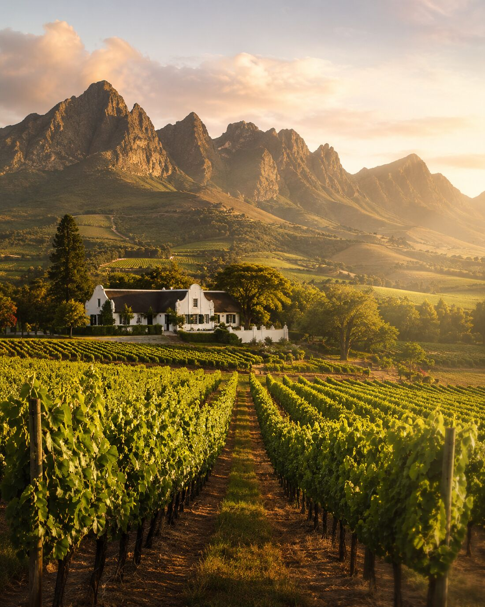

Where the mountain meets the vine
Crafted in the heart of the Cape, our brandy begins where the mountain meets the vine. Aged in oak barrels under the fierce African sun, each batch is made by hand — small, deliberate, and with no shortcuts.
We don’t chase trends. We chase flavor. This is high-proof brandy made for those who appreciate the untamed edge of tradition. No dilution. Just deep amber fire, pulled straight from the cask.
Brandy has been made at the Cape since 1672 — longer than bourbon has existed. Cape Cask carries that tradition forward with something the category has never offered America: a Cape brandy bottled exactly as it leaves the barrel.
